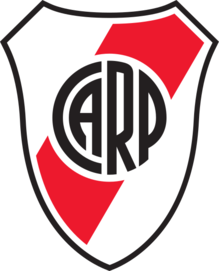
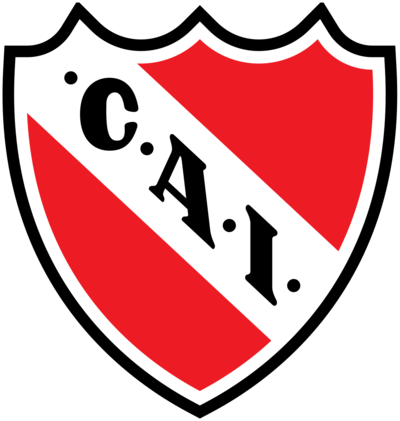
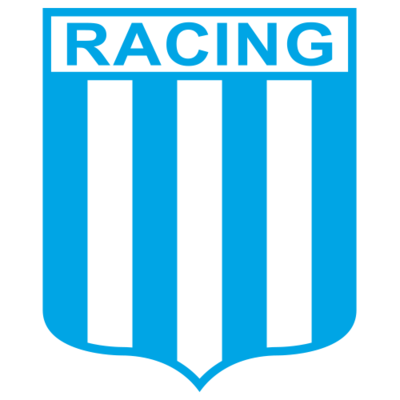

Mayor clasico historicamente. Es considerado por los hinchas como su segundo clasico, ademas, presenta una mayor competencia al ser el único club grande que posee mayor victorias en el historial con Boca Junios  Es considerado como un clásico aunque con mucha menos importancia  Posee también una rivalidad muy grande 